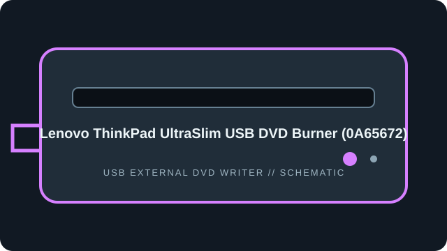

[ EXTERNAL DVD WRITERS // IDENTIFIED MODEL ]
Lenovo ThinkPad UltraSlim USB DVD Burner (0A65672)
ThinkPad-branded external slim USB DVD burner, also catalogued with Lenovo FRU 4XA0E97775. Verify accessory/FRU label because regional bundles can differ.

IDENTIFICATION: Match the full model/suffix and any bundled part number against the unit label and cited manual. Rated maximums depend on media, firmware, and operating mode; read support is not write support.
Documented specifications
| Catalog subcategory | External DVD writers |
|---|---|
| Exact model | Lenovo ThinkPad UltraSlim USB DVD Burner (0A65672) |
| Read media formats | CD-ROM, CD-R/RW; DVD-ROM, DVD±R/RW and DVD±R DL. DVD-RAM read/write support is reported for the burner specification; verify against the exact unit/firmware revision. |
| Rated read speeds | DVD-ROM/recordable DVD up to 8×; DVD±R DL up to 6×; CD-ROM/CD-R/RW up to 24×. DVD-RAM up to 5× where supported by the specific unit. |
| Write media formats | CD-R/RW; DVD±R, DVD±RW and DVD±R DL. DVD-RAM support is firmware/package-specific; consult the included Lenovo model manual before recording RAM media. |
| Rated write speeds | DVD±R up to 8×; DVD+RW up to 8×; DVD-RW up to 6×; DVD±R DL up to 6×; CD-R up to 24× and CD-RW up to 24×. DVD-RAM up to 5× only where stated for the exact drive revision. |
| USB interface | External USB 2.0, bus-powered through USB-A cable; a powered hub/host port may be required if the drive reports inadequate power. |
| OS / firmware compatibility | Lenovo documentation targets Windows hosts; Mac compatibility is not guaranteed for all bundled functions. The user guide does not establish an independently updateable firmware version; preserve the reported drive revision and use only Lenovo-approved files for the matching FRU. |
| Model distinction | 0A65672 is the accessory model; 4XA0E97775 appears as the associated FRU in Lenovo documentation. |
Use, compatibility & preservation
- External USB 2.0, bus-powered through USB-A cable; a powered hub/host port may be required if the drive reports inadequate power.
- Lenovo documentation targets Windows hosts; Mac compatibility is not guaranteed for all bundled functions. The user guide does not establish an independently updateable firmware version; preserve the reported drive revision and use only Lenovo-approved files for the matching FRU.
- 0A65672 is the accessory model; 4XA0E97775 appears as the associated FRU in Lenovo documentation.
- Record drive model and reported firmware, host OS, USB controller, application version, disc format, media brand and any read or verification errors when imaging.
- Keep checksummed image copies and logs; store discs in cases away from heat, moisture and direct sunlight. Avoid adhesive labels, abrasives and undocumented solvents.
Firmware support is model-specific: do not cross-flash a related product family or infer an update from an adjacent suffix.
Sources
- Lenovo ThinkPad UltraSlim USB DVD Burner — overview/supportLenovo accessory overview and support information for the ThinkPad UltraSlim USB DVD Burner.
- Lenovo ThinkPad UltraSlim USB DVD Burner — user manualUser-manual mirror for the named accessory; compare identifiers with Lenovo’s official support entry.